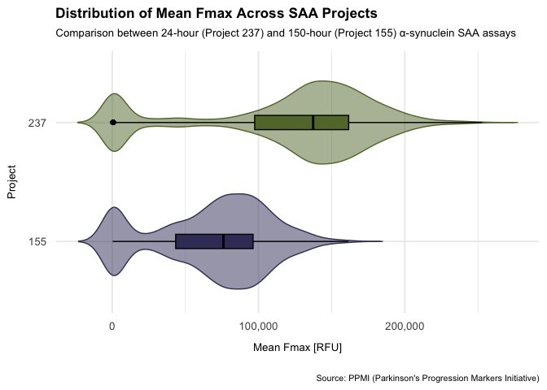
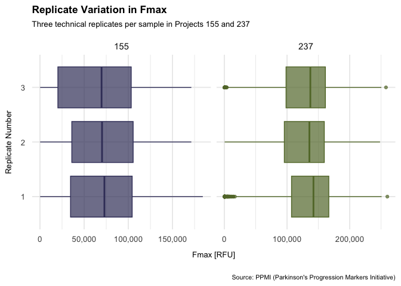
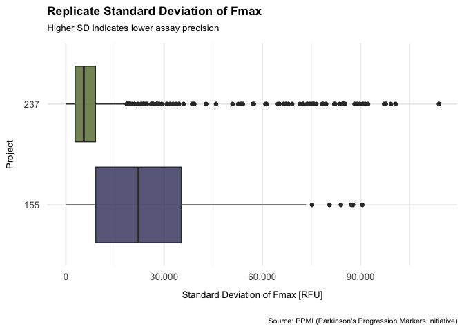
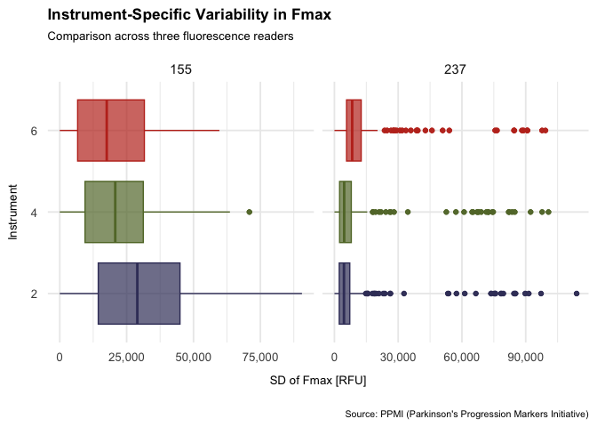
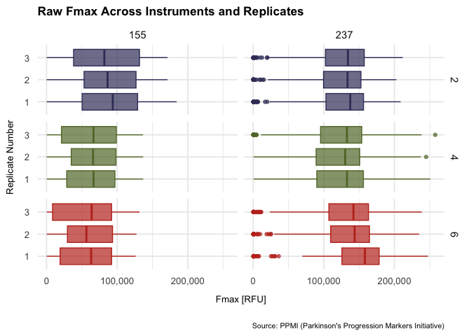

library(tidyverse)
aug_data <- read_tsv("../data/03_aug_data.tsv")
aug_data <- aug_data |>
mutate(across(c(project,
duration,
rep,
instrument),
as.character))06_analysis_2
my_cols <- c("#3C3C68","#627634","#C03221","#545E75", "#94BFBE", "#7A1F15",
"#da9283" , "#474B24")
theme_custom <- theme_minimal(base_size = 14) +
theme(
plot.title = element_text(face = "bold", size = 13, margin = margin(b = 7)),
plot.subtitle = element_text(size = 10, margin = margin(b = 12)),
plot.caption = element_text(size = 8, margin = margin(t = 20)),
axis.title.x = element_text(size = 10, margin = margin(t = 10)),
axis.title.y = element_text(size = 10, margin = margin(r = 10)),
axis.text.x = element_text(size = 10, margin = margin(t = 5)),
axis.text.y = element_text(size = 10, margin = margin(r = 5)),
legend.position = "none",
)Analysis of Fmax
Seed Amplification Assays (SAA) detect α-synuclein aggregates in cerebrospinal fluid (CSF) and monitors fluorescence intensity over time. The point at which fluorescence reaches its maximum (Fmax) reflects the level of α-synuclein aggregation and is therefore a potential diagnostic indicator for Parkinson’s disease (PD).
The two projects perform the assays under different variables:
Project 155: 150-hour assay, fluorescence measured every 29 minutes
Project 237: 24-hour assay, fluorescence measured every 14 minutes
Variations in assay duration, cycle length, and reaction mixture composition mean that fluorescence values (Fmax) are not directly comparable across projects without normalization. Because assay duration, cycle frequency, and reaction mixture differ between projects, fluorescence values (Fmax) cannot be directly compared without normalizing and looking at variability and protocol-specific characteristics.
The goal of this analysis is therefore to evaluate the precision, consistency, and overall stability of the two assays, including whether instrument differences contribute to variability.
Comparison of Overall Fmax Levels
Project 237 consistently shows higher mean Fmax values than Project 155. This difference is expected: shorter assays accumulate fluorescence more rapidly, while longer assays distribute aggregation over many more cycles, resulting in lower peak values.
p_fmax_mean_dist <- aug_data |>
ggplot(
aes(
x = fmax_mean,
y = project,
color = project,
fill = project
)
) +
geom_violin(alpha = 0.5,
width = 0.8,
trim = FALSE) +
geom_boxplot(width = 0.12,
color = "black",
outlier.alpha = 0.3) +
scale_color_manual(values = my_cols) +
scale_fill_manual(values = my_cols) +
theme_minimal(base_size = 14) +
labs(
title = "Distribution of Mean Fmax Across SAA Projects",
subtitle = "Comparison between 24-hour (Project 237) and 150-hour (Project 155) α-synuclein SAA assays",
x = "Mean Fmax [RFU]",
y = "Project",
caption = "Source: PPMI (Parkinson's Progression Markers Initiative)"
) +
theme_custom +
scale_x_continuous(labels = scales::label_comma())p_fmax_mean_dist
Although absolute values differ, the focus of this analysis is not the magnitude of Fmax but the reproducibility of replicate measurements within each project.
Consistency of Technical Replicates
Distribution of Replicate Fmax Values
Means alone can’t be used to compare the consistency of the two assays. To do this, we will compare Fmax across replicates 1–3 for each project.
p_fmax_by_rep <- ggplot(aug_data, aes(
x = fmax,
y = factor(rep),
color = project,
fill = project
)) +
geom_boxplot(alpha = 0.7) +
facet_wrap(~ project, scales = "free_x") +
scale_color_manual(values = my_cols) +
scale_fill_manual(values = my_cols) +
labs(
title = "Replicate Variation in Fmax",
subtitle = "Three technical replicates per sample in Projects 155 and 237",
x = "Fmax [RFU]",
y = "Replicate Number",
caption = "Source: PPMI (Parkinson's Progression Markers Initiative)"
) +
theme_custom +
theme(legend.position = "none") +
scale_x_continuous(labels = scales::label_comma())p_fmax_by_rep
repeats_fmax_stats <- aug_data |>
ungroup() |>
summarize(mean=mean(fmax),
median=median(fmax),
IQR = quantile(fmax,.75)- quantile(fmax,.25),
.by = c(project, rep))Summary statistics:
| Project | Rep 1 Median | Rep 2 Median | Rep 3 Median | Variation (Range) |
|---|---|---|---|---|
| 155 | 72,926 | 70,262 | 69,721 | 3,205 |
| 237 | 142,138 | 135,570 | 137,200 | 6,568 |
Observations
Project 155: Shows a small, gradual decrease from replicate 1 to 3.
Project 237: Shows a dip in replicate 2, with higher values in replicates 1 and 3.
These patterns are consistent and most likely reflect behavior that is specific for protocol.
Replicate Variability (IQR)
| Project | Rep 1 IQR | Rep 2 IQR | Rep 3 IQR | Variation |
|---|---|---|---|---|
| 155 | ~69,736 | ~69,404 | ~82,973 | 13,569 |
| 237 | ~59,530 | ~63,910 | ~63,179 | 4,380 |
Interpretation
Project 237: shows a more “tight” replicate clustering, indicating greater precision.
Project 155: shows larger and less stable variability, especially in replicate 3.
Replicate Standard Deviation (SD)
Standard deviation (SD) of Fmax across replicates measures stability of the assays.
sd_saa_data <- aug_data |>
group_by(patient_number, rundate) |>
mutate(fmax_sd = sd(fmax))p_sd_by_project <- sd_saa_data |>
filter(instrument %in% c(2, 4, 6)) |>
ggplot(aes(x = fmax_sd,
y = project,
fill = project)) +
geom_boxplot(alpha = 0.8) +
scale_fill_manual(values = my_cols) +
labs(
title = "Replicate Standard Deviation of Fmax",
subtitle = "Higher SD indicates lower assay precision",
x = "Standard Deviation of Fmax [RFU]",
y = "Project",
caption = "Source: PPMI (Parkinson's Progression Markers Initiative)"
) +
theme_custom +
theme(legend.position = "none") +
scale_x_continuous(labels = scales::label_comma())p_sd_by_project
sd_saa_stats <- sd_saa_data |>
ungroup() |>
summarize(min = min(fmax_sd),
mean=mean(fmax_sd),
median=median(fmax_sd),
max=max(fmax_sd),
IQR = quantile(fmax_sd,.75)- quantile(fmax_sd,.25),
.by = project)Summary statistics:
| Project | Mean SD | Median SD | IQR |
|---|---|---|---|
| 155 | 24,066 | 22,198 | 26,131 |
| 237 | 10,386 | 5,662 | 6,470 |
The 150-hour assay (155) has 2–4 times higher replicate variability than the 24-hour assay (237). This is one of the most important quality results in the entire analysis.
Instrument-Specific Variability
We next examined whether any fluorescence reader (instruments 2, 4, 6) contributed disproportionately to the SD.
p_sd_by_instrument <- sd_saa_data |>
filter(instrument %in% c(2,4,6)) |>
ggplot(aes(
x = fmax_sd,
y = instrument,
color = factor(instrument),
fill = factor(instrument)
)) +
geom_boxplot(alpha = 0.7) +
facet_wrap(~ project, scales = "free_x") +
scale_color_manual(values = my_cols) +
scale_fill_manual(values = my_cols) +
labs(
title = "Instrument-Specific Variability in Fmax",
subtitle = "Comparison across three fluorescence readers",
x = "SD of Fmax [RFU]",
y = "Instrument",
caption = "Source: PPMI (Parkinson's Progression Markers Initiative)"
) +
theme_custom +
scale_x_continuous(labels = scales::label_comma())p_sd_by_instrument
sd_instruments_stats <- sd_saa_data |>
ungroup() |>
summarize(mean=mean(fmax_sd),
median=median(fmax_sd),
IQR = quantile(fmax_sd,.75)- quantile(fmax_sd,.25),
.by = c(project, instrument))Instrument-level statistics:
| Project | Instr. | Mean SD | Median SD | IQR |
|---|---|---|---|---|
| 155 | 2 | 30,015 | 28,999 | 30,174 |
| 237 | 2 | 8,384 | 4,482 | 4,953 |
| 155 | 4 | 21,469 | 20,743 | 21,746 |
| 237 | 4 | 8,788 | 4,594 | 5,483 |
| 155 | 6 | 20,190 | 17,562 | 24,950 |
| 237 | 6 | 13,107 | 8,357 | 6,809 |
Interpretation
No single instrument is consistently “worst” or “best.”
Instrument effects depend on the project, indicating interaction between protocol and hardware.
Critically, even the highest SD in Project 237 is lower than the lowest SD in Project 155.
This confirms that protocol (not instrument) is the dominant source of variability.
Raw Fmax by Instruments and Replicates
To visualize replicate patterns across instruments:
p_fmax_raw_rep_inst <- aug_data |>
filter(instrument %in% c(2,4,6)) |>
ggplot(aes(
x = fmax,
y = factor(rep),
color = factor(instrument),
fill = factor(instrument)
)) +
geom_boxplot(alpha = 0.7) +
facet_grid(instrument ~ project) +
scale_color_manual(values = my_cols) +
scale_fill_manual(values = my_cols) +
labs(
title = "Raw Fmax Across Instruments and Replicates",
x = "Fmax [RFU]",
y = "Replicate Number",
caption = "Source: PPMI (Parkinson's Progression Markers Initiative)"
) +
theme_custom +
scale_x_continuous(labels = scales::label_comma())p_fmax_raw_rep_inst
stats_instruments_project <- aug_data |>
ungroup() |>
filter(instrument == 2 | instrument == 4 | instrument == 6) |>
summarize(min = min(fmax),
mean=mean(fmax),
median=median(fmax),
max=max(fmax),
.by = c(project, rep, instrument))Across both projects, either replicate 1 or 3 typically gives the highest Fmax.
This aligns with known SAA behavior:
Rep 1 often initiates early aggregation (“priming”).
Rep 3 often captures stabilized aggregation at late cycles.
Instrument-specific medians confirm these patterns and align with earlier SD/IQR findings.
Instrument 2
| 155 | 237 | |
|---|---|---|
| Median (rep 1) | 93781.0 | 137402.5 |
| Median (rep 2) | 86402.0 | 133614.0 |
| Median (rep 3) | 81850.0 | 134146.0 |
Instrument 4
| 155 | 237 | |
|---|---|---|
| Median (rep 1) | 66598.0 | 132876.0 |
| Median (rep 2) | 65894.5 | 130309.5 |
| Median (rep 3) | 66471.0 | 132749.0 |
instrument 6
| 155 | 237 | |
|---|---|---|
| Median (rep 1) | 63126.0 | 158205.0 |
| Median (rep 2) | 56437.0 | 143678.0 |
| Median (rep 3) | 63862.0 | 141988.0 |
Overall Interpretation
Across all analyses, mean Fmax, replicate medians, IQR, SD, and instrument comparisons, Project 237 shows more precision and replicate reproducibility.
Key conclusions:
Fmax magnitude: Differs between projects due to protocol differences; not directly comparable without normalization.
Replicate variability: Is substantially lower in the 24-hour assay (Project 237).
Standard deviation: Is 2–4 times lower in Project 237, making it markedly more stable.
Instrument effects: Are present but small compared with protocol effects.
Project 155’s 150-hour assay: Shows broad variability and inconsistent replicate behavior, reducing precision.
Summary
Project 237 (24-hour SAA) demonstrates:
Higher Fmax values
Much lower replicate variability
Stronger consistency across instruments
More coherent replicate patterns
Project 155 (150-hour SAA) shows:
Lower Fmax (expected from protocol)
Substantially higher replicate noise
Greater instrument-dependent variation
Overall poorer measurement precision